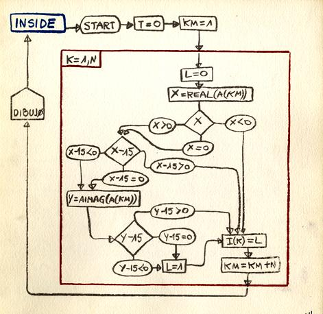
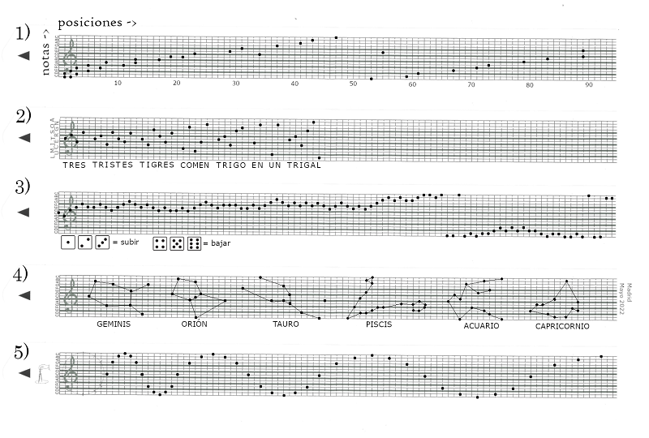

Desde mis años de formación en alemania cuando el gran compositor Denis Lorrain nos impartía la asignatura de música algorítmica tengo especial interés por la utilización de algoritmos como forma de creación, y especialmente creación sonora. La sonificación, la combinatoria, la aleatoriedad y probabilidad, las estructuras fractales, los autómatas celulares, los sistemas L, y tantos otros algoritmos se usan hoy en día para crear música entre otras cosas, con o sin la ayuda de un ordenador.
A lo largo del año 2022 he comisariado una serie de actividades en el Museo Nacional Centro de Arte Reina Sofía en torno a música algorítmica con motivo del centenario del nacimiento de Iannis Xenakis. En este ciclo ha habido desde talleres a conferencias, conciertos y acciones orientadas a desarrollar una mirada crítica en torno a esta forma de arte.
Un algoritmo es una serie de instrucciones que permiten la realización de una tarea compleja. Aunque Ada Lovelace (1815-1852) fue la primera persona en escribir de forma consciente y publicar un algoritmo específicamente diseñado para ser ejecutado por una máquina, en realidad la humanidad llevaba siglos usando algoritmos en tareas de la vida diaria. Así una receta de cocina, un patrón para tejer un jersey o un reto de baile viral tienen en común con un programa informático que se pueden dividir en pasos concretos y que éstos deben realizarse en un orden determinado y no en otro. Los artistas, que buscan constantemente lenguajes con los que expresarse, también hacen uso de secuencias, series e instrucciones para transmitir y expresar ideas. Entre estos artistas están Iannis Xenakis (1922-2001) y los participantes en los seminarios y conferencias del Centro de Cálculo de la Universidad de Madrid, cuyos trabajos están representados en la Colección del Museo.
En el centenario del nacimiento de Xenakis, el Museo Reina Sofía celebra esta forma de arte con un conjunto de actividades educativas cuyo objetivo es dar a conocer estas prácticas, desarrollar una mentalidad crítica sobre el uso de los algoritmos en nuestro día a día y ayudar a reconocer la belleza que existe en ellos, una belleza que trasciende los límites de espacio y tiempo formando parte del mundo infinito y abstracto de la lógica y de las matemáticas.
José Luis Alexanco, Programa MOUVNT, 1969-1973, Museo Reina Sofía
Con motivo del proyecto comisarial {Serie(secuencia)}.instruccion, y para facilitar la participación de todo tipo de público, siendo un proyecto fundamentalmente educativo compuse cinco miniaturas algorítmicas para caja de música que se publicaron en la revista SOBRE de la Universidad de Granada.
Cinco miniaturas algorítmicas. Revista Sobre. Año 2022.
Estas miniaturas no son piezas cerradas, son textos que indican los pasos a seguir para crear tu propia pieza. Para ello necesitarás una caja de música que permita introducir una partitura creada por ti en forma de rollo de pianola, en la que cada agujero representa una nota musical.